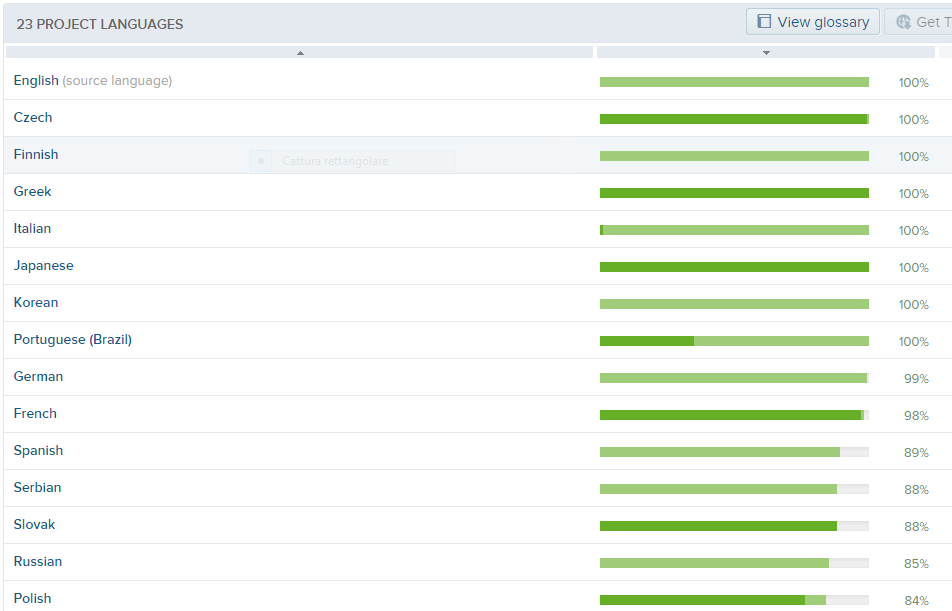

Introduction¶
Where do I get Geopaparazzi?¶
To install Geopaparazzi refer to the installation section.
Translations¶
Geopaparazzi has already been translated in several languages.
Do you want to see Geopaparazzi in your language? With transifex it is a simple task.
Check out the translation page and send us your contributions.
Need help?¶
Subscribe to the users mailinglist, we are here to help you!
We also have a mailinglist for developers.
Found bugs?¶
If you found a bug, please report it in our issue tracker. We will check it and work on it as soon as we can.
Need features?¶
If you would like to see new features in geopaparazzi, you have a few ways to get there:
- develop them yourself and contribute them to the project via pull requests
- hire someone to do that for you
- create a new feature request in our issue tracker and wait for someone interested to do it
Donations¶
If you find this application useful for your job, please consider to donate to support the development.
Thanks for helping to keep this development free and open source.

{kind=link}